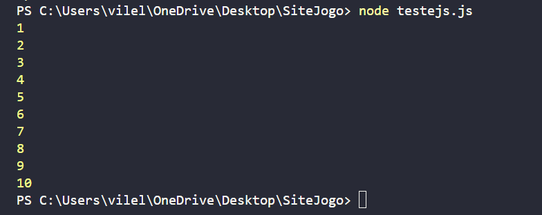
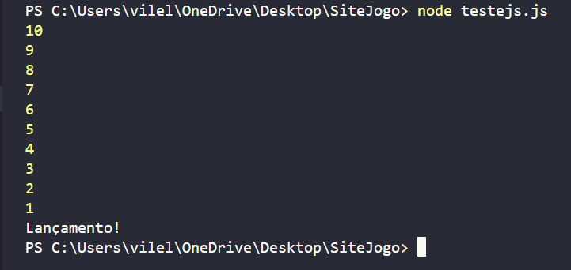
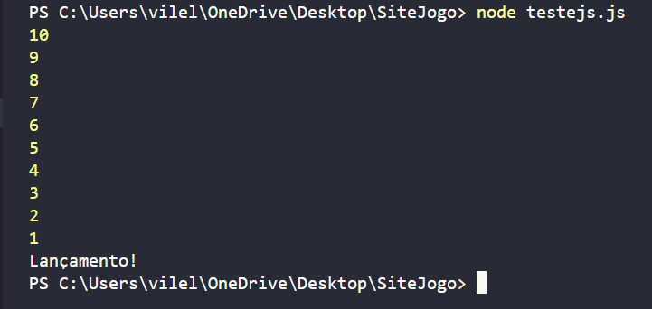

Estrutura de repetição While
A estrutura while é uma das ferramentas mais importantes na programação, utilizada para criar loops ou laços
de repetição.
No início de cada iteração, a condição dentro do enquanto é avaliada. Se a condição for
verdadeira, o código dentro do faz é executado. Após a execução do bloco, o programa volta ao início do loop
para verificar a condição novamente e o loop continua se repetindo até que a condição se torne falsa.
Se a condição nunca se tornar falsa, o loop continuará para sempre, causando um loop infinito. É importante
garantir que a condição mude dentro do loop para evitar esse problema.
Quando usar:
-
Repetição indefinida:
Quando você não sabe exatamente quantas vezes um bloco de código precisa ser executado, mas sim até que uma determinada condição seja satisfeita. -
Processamento de dados:
Para ler e processar dados de um arquivo enquanto houver dados disponíveis. -
Simulações:
Para simular eventos aleatórios ou processos que evoluem ao longo do tempo. -
Interação com o usuário:
Para solicitar entradas do usuário repetidamente até que ele digite um valor válido.
Exemplos da estrutura: While
Exemplo 1:
Contando até 10Entrada:
Saida: 
Exemplo 2:
Somando números até que a soma seja maior que 100Entrada:
Saida:
Exemplo 3:
Imprimindo uma sequência de caracteresEntrada:
Saida:
Exemplo 4:
Contagem regressivaEntrada:
 Saida: 
Saida: 
Exemplo 5:
Soma de números pares de uma listaEntrada:
Saida:

Agora é com você!
Mostre que, com o site, você aprendeu a usar a estrutura de repetição FOR, caso tenha alguma dúvida, revise o conteúdo novamente.
Crie Um código que calcula a soma dos números inteiros de 1 até um número n, onde n é uma variável pré-definida no código, por exemplo a soma de 1 até 5(n).